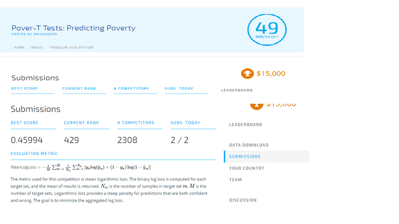
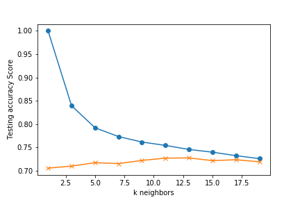
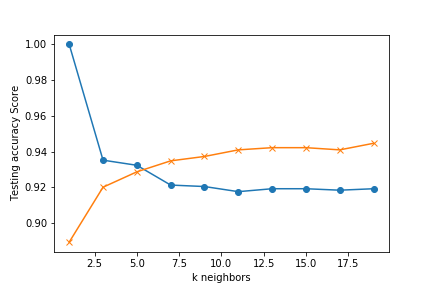
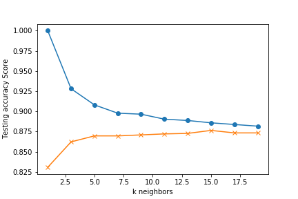

Motivation Towards This Project
My participation in the competition can be seen as an accident. I was browsing the DrivenData page and saw a competition was going on, which was sponsored by World Bank, my former organization. The topic was interesting - poverty prediction. I had a published paper on this topic. In my Masters in Statistics I worked on a thesis paper 'Identifying the Poor Using Binary Classifiers'. In that ppaer I used Guttman Score to classify where a household is poor or not. My motivation came from this.
In this machine learning competition I started with processing the data and standardization. As mentioned in the problem description page, I was given two types of data set - training and test - for each of three countries.
Training dataset has the label - poor and non-poor status of household. However, the test data set didn't has no such label. The model built on training dataset is to predict the poverty status of household in the test data. The Driven Data site gave score of each submission and the score was the mean log-loss. I had a total of 9 submission and my highest score in terms of mean log-loss was .4544 and I was ranked 429 out of more than 1000 participants. The models that I worked on for the competition included - random forest, logistic regression, SVM, grid search and adaboost classifier. Here is the screen shot of my score in the competition.
While the competition is over I thought why not I continue with the project and make it as final project in the bootcamp with further works. In this final project, I only worked on training data set and tried to replicate the benchmark results.
Benchmark Results
The World Bank had presented the findings of their own machine learning works on the final day of the competition. I had the opportunity to be present their and listen to their observation.
The below table summarizes the outcome of selected models of each class for Malawi (MWI) when considered for preprocessing options (such as over- and under-sampling) and hyperparameter optimization using cross-validation. This table reports the best performing version of a model for each class of model that was explored. The models that perform best (for any quality measure) are not the same that performed best for MWI. Clearly, logistic regression is seen the top performing model here.
| Algorithm | Accuracy | Recall | Precision | f1 | ROC AUC | Cohen Kappa |
|---|---|---|---|---|---|---|
| Logisitic Regression | 0.910 | 0.456 | 0.662 | 0.540 | 0.923 | 0.483 |
| SVM | 0.902 | 0.208 | 0.782 | 0.329 | 0.932 | 0.312 |
| KNN | 0.904 | 0.372 | 0.647 | 0.472 | 0.865 | 0.423 |
| XGBoost | 0.898 | 0.184 | 0.743 | 0.295 | 0.917 | 0.285 |
| Decision Trees | 0.859 | 0.392 | 0.390 | 0.391 | 0.656 | 0.306 |
| Naïve Bayes | 0.807 | 0.603 | 0.322 | 0.420 | 0.828 | 0.238 |
| Random Forest | 0.892 | 0.107 | 0.729 | 0.187 | 0.832 | 0.210 |
THe below three tables summarize the results of 9 models that I have built so far for each country - A, B and C
The results for country A reveals that SVM is the most appropriate model. In all dimension SVM with cross validation of 5 gives better results. However, log loss couldn't be minimized. Log loss near 0 is expected. Here, random forest, decision tree and KNN perform poorly in predicting the class or label of household.
Country A
| Algorithm | Accuracy | Recall | Precision | f1 | ROC AUC | Cohen Kappa | Log Loss |
|---|---|---|---|---|---|---|---|
| SVM Full CV | 0.876 | 0.88 | 0.88 | 0.88 | 0.875 | 0.748 | 4.294 |
| Logisitic Regression | 0.875 | 0.88 | 0.88 | 0.88 | 0.874 | 0.747 | 4.311 |
| Grid Search Model | 0.874 | 0.88 | 0.87 | 0.87 | 0.875 | 0.745 | 4.362 |
| SVM with Isotonic | 0.873 | 0.87 | 0.87 | 0.87 | 0.873 | 0.744 | 4.378 |
| Adaboost Classifier | 0.867 | 0.87 | 0.87 | 0.87 | 0.865 | 0.730 | 4.597 |
| XGBoost | 0.858 | 0.86 | 0.86 | 0.86 | 0.856 | 0.711 | 4.917 |
| Random Forest | 0.807 | 0.81 | 0.81 | 0.81 | 0.804 | 0.609 | 6.652 |
| Decision Trees | 0.747 | 0.75 | 0.75 | 0.75 | 0.746 | 0.490 | 8.723 | KNN | 0.724 | 0.8 | 0.72 | 0.72 | 0.749 | 0.470 | 9.548 |

For country B SV with isotonic came out as top performing model followed by XGBoost and Random Forest
Country B
| Algorithm | Accuracy | Recall | Precision | f1 | ROC AUC | Cohen Kappa | Log Loss |
|---|---|---|---|---|---|---|---|
| SVM with Isotonic | 0.946 | 0.92 | 0.95 | 0.92 | 0.511 | 0.039 | 1.867 |
| XGBoost | 0.945 | 0.92 | 0.94 | 0.93 | 0.553 | 0.164 | 1.909 |
| Random Forest | 0.945 | 0.91 | 0.94 | 0.92 | 0.510 | 0.036 | 1.909 |
| KNN | 0.941 | 0.92 | 0.94 | 0.92 | 0.583 | 0.123 | 2.037 |
| Logistic Regression | 0.921 | 0.92 | 0.92 | 0.92 | 0.583 | 0.178 | 2.716 |
| Decision Trees | 0.921 | 0.91 | 0.88 | 0.89 | 0.563 | 0.098 | 4.073 |
| Adaboost Classifier | 0.903 | 0.93 | 0.93 | 0.93 | 0.630 | 0.268 | 2.503 |
| Grid Search Model | 0.903 | 0.92 | 0.9 | 0.91 | 0.595 | 0.167 | 3.352 | SVM Full CV | 0.900 | 0.91 | 0.9 | 0.91 | 0.583 | 0.146 | 3.437 |

Country C seems to be an ideal data set for use of machine learning to predict poverty status of the housheolds. Most of the models far well in all dimension of metrics - accuracy, precision, recall. Even the log loss is found to be very low compare to the results in other two countries.
Country C
| Algorithm | Accuracy | Recall | Precision | f1 | ROC AUC | Cohen Kappa | Log Loss |
|---|---|---|---|---|---|---|---|
| XGBoost | 0.996 | 1.00 | 1.00 | 1.00 | 0.991 | 0.985 | 0.128 |
| Adaboost Classifier | 0.996 | 1.00 | 1.00 | 1.00 | 0.989 | 0.983 | 0.149 |
| Decision Trees | 0.993 | 0.99 | 0.99 | 0.99 | 0.991 | 0.973 | 0.235 |
| Random Forest | 0.979 | 0.98 | 0.98 | 0.98 | 0.928 | 0.910 | 0.726 |
| SVM Full CV | 0.914 | 0.92 | 0.91 | 0.91 | 0.837 | 0.662 | 2.967 |
| SVM with Isotonic | 0.912 | 0.91 | 0.91 | 0.91 | 0.794 | 0.625 | 3.031 |
| Logistic Regression | 0.907 | 0.91 | 0.91 | 0.91 | 0.808 | 0.622 | 3.223 |
| Grid Search Model | 0.895 | 0.92 | 0.89 | 0.90 | 0.882 | 0.645 | 3.629 | KNN | 0.876 | 0.86 | 0.88 | 0.85 | 0.624 | 0.333 | 4.269 |
